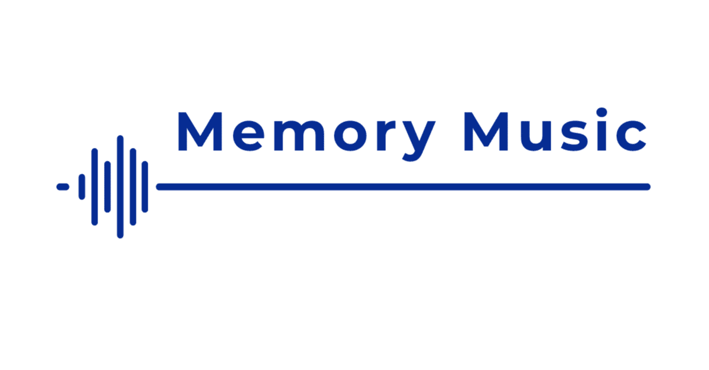

「どうせならもう ヘタクソな夢を描いていこうよ」
数あるJPOPソングの中でも有名な歌い出しで始まる『決意の朝に』。
手掛けたのはAqua Timez。宮部みゆき原作で、2006年にアニメーションで映画化された『ブレイブ・ストーリー』の主題歌として書き下ろされたのが同曲だ。
この曲がリリースされたのが、僕が小学校を卒業し中学に上がった頃。
仲の良かった友人たちがもれなく近隣の区立中学校に進学する中、僕だけが親の意向で馴染みのない土地にある私立の中高一貫校に進学することになった。
質の高い教育を受けられる私立に行かせてもらえることは本来であれば喜ばしいはずなのに、僕にはつらくて仕方がなかった。
でも、そんなことは親には言えなかった。子どもながらに親の期待は裏切れないと感じ、僕は人生初の受験勉強に勤しみ、なんとか一校だけ合格できたのがその学校だった。
当時抱えていた本心は、勉強より断然友情の方が大事だったということ。
それに、当時の自分にはほとんど自覚がなかったが、僕は新しい環境に慣れるまで人よりも時間がかかるタイプ。周りのクラスメイトはそれぞれにグループを作り上げていたが、僕だけは誰ひとりとして友人を作ることができなかった。次第に学校から足が遠のき、入学して2か月が過ぎた頃、ついにその場所には行かなくなった。
これは最近知ったことだが、心配した親が当時の担任教諭に相談していたものの、取り付く島もない様子だったらしい。
その学校はプロテスタント系ということもあり外国人の先生も複数いて、その担任教諭も日本とは文化の異なるドイツ人だったというのも、もしかしたら関係していたのかもしれない。
「本人が行きたくないと言うのなら、無理をさせても意味はないと思うんです」
今になっては先生がそう考えていた理由もわかる気はする。しかし、当時はその先生とはたとえ言葉は交わせても、心を交わせることは一度もできなかった。
結局入学から一年も経たずして、僕は地元の中学校に転校することになった。
でも、小学校時代の友人が多く進学した近所の中学ではなく、家からは少し時間のかかる別の区立に入った。ここでも僕はわがままを言って、かつての友人たちに惨めな姿を見せたくないという、ちっぽけなプライドばかりを気にしていたのだった。
しかし、場所を変えたところで人間の性根は簡単には変われない。
入学して数日したところで、僕はまた学校に行かなくなった。特別明るい性格でもないし、最初は物珍しいもの見たさに多くのクラスメイトが寄ってきたが、あまり面白くない人間だとバレたからか、すぐに周りから人はいなくなった。
もう以前の自分には戻れない。
そんな絶望が心を覆い隠そうとしていた頃、テレビのCMで流れてきたのが『決意の朝に』だった。
他人の痛みには無関心
そのくせ自分の事となると不安になって
人間を嫌って 不幸なのは自分だけって思ったり
与えられない事をただ嘆いて 三歳児のようにわめいて
愛という名のおやつを座って待ってる僕は
アスファルトの照り返しにも負けずに
自分の足で歩いてく人達を見て思った
動かせる足があるなら 向かいたい場所があるなら
この足で歩いてゆこう
「CDを買いたい」とねだり、すぐさま近所のCDショップまで走った。
無事に購入できると急いで家に戻り再生。一言一言を噛みしめるように聴き入った。そして、この曲は今の僕に最も必要なものだと、あの頃は本気で思った。
自分は自分で変えていくしかない。
この曲に教えられた僕はのちに様々な葛藤に悩まされるが、数日後には学校に行き始めた。最初は緊張しかしなかったけど、ひとえに周りの優しさに救われ、自然と新しい友人たちができた。
結局、まともにその学校に通ったのは1年ちょっとだったけど、気がつけば卒業アルバムの白紙ページには余白を見つける方が難しいほど温かな友人たちからのメッセージで溢れていた。
そのインクに落とした涙は、僕の場合、別れの寂しさだけではなかった。大切な人を悲しませたり心配させてしまったけど、ここまでこれてよかった。そんな小さな安堵もあった。
当時の僕の背中を押してくれた『決意の朝に』は、まさに人生を変えてくれた一曲になった。
実はこの曲、彼らがメジャーデビューして初めてのシングルでもある。
その後も『千の夜をこえて』『ALONES』『等身大のラブソング』など多くの名曲を世に送り出すことになるが、2018年に解散を発表。
「音楽性の違い」「それぞれの活動に注力したい」等の理由ではなく、「メンバー全員がこれまでの活動で燃え尽きたような感覚がある。今まで本当に幸せな時間だった」と語っていたことも、僕の目頭を熱くさせた。
そして解散から6年目を迎えた今年。Aqua Timezが再結成するとのアナウンスがあった。どうやらデビュー20周年を迎える来年に、期間限定ではあるが再び音楽を奏でてくれるというのだ。
『決意の朝に』と出会ってから20年近くが経過し、僕も30代に突入してしまったけれど、あの頃の記憶は未だ鮮明に覚えている。それはきっと、彼らの声を聴くたび、記憶により深く刻まれていくのだろう。そして、これからも変わらず、僕は僕なりに“ヘタクソな夢”を描いて生きていきたいと、強く思う。
https://www.youtube.com/watch?v=mLMluQow_TA